Preparing data for analysis with Spectre
Thomas Ashhurst, Givanna Putri
2025-09-19
Source:vignettes/data_prep.Rmd
data_prep.RmdExporting data from FlowJo
This page explains the initial data analysis and preparation steps for different forms of cytometry data, and how to export data from FlowJo in preparation for analysis with Spectre. The overall objective is to export a population of interest (e.g. leukocytes), usually following the removal of doublets, debris, dead cells, and any irrelevant cells.
Population of interest (POI) gating
Gate to your ‘population of interest’ (POI). Typically this will be ‘live cells’, or potentially live CD45+ cells (live leukocytes).
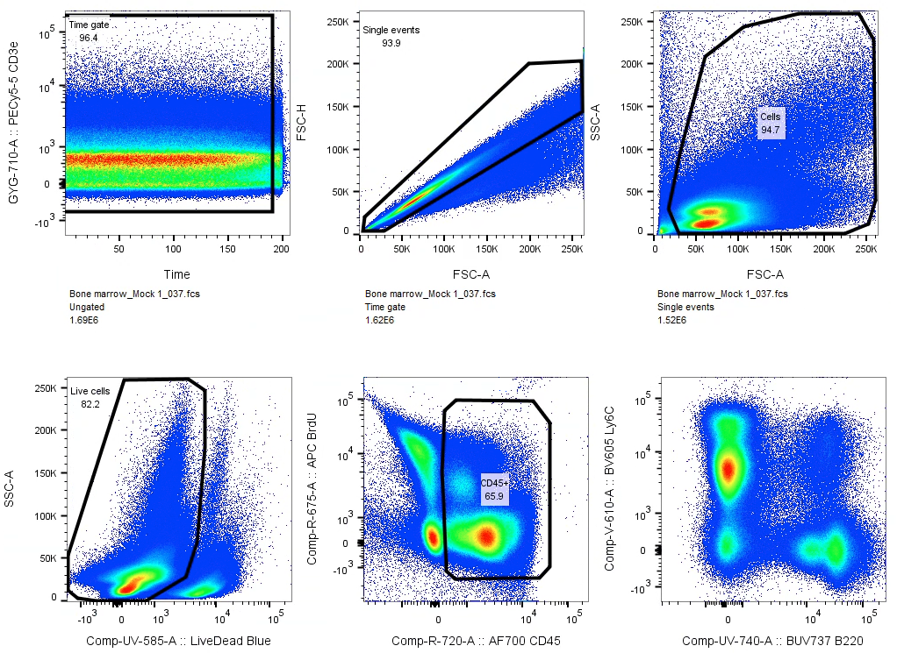
Select the POI you wish to export, and then click ‘Select Equivalent Nodes’ in the ‘Edit’ space.
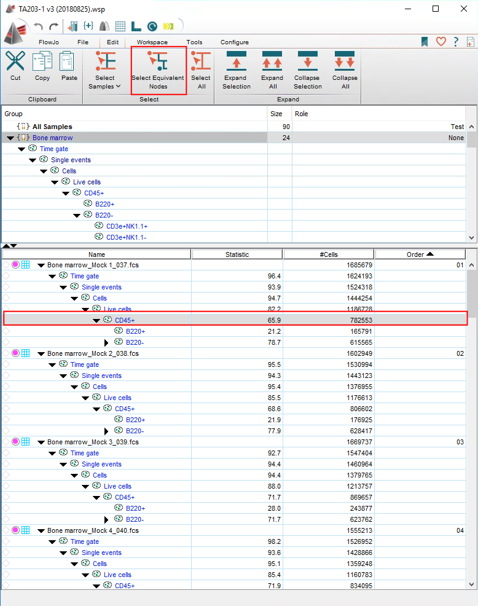 … this will select each POI gates in each samples.
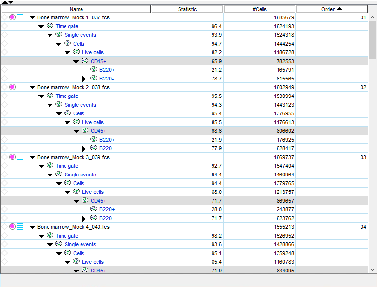
Right click on any of the POI populations (as long as all have been selected) and select ’Export / Concatenate Populations’
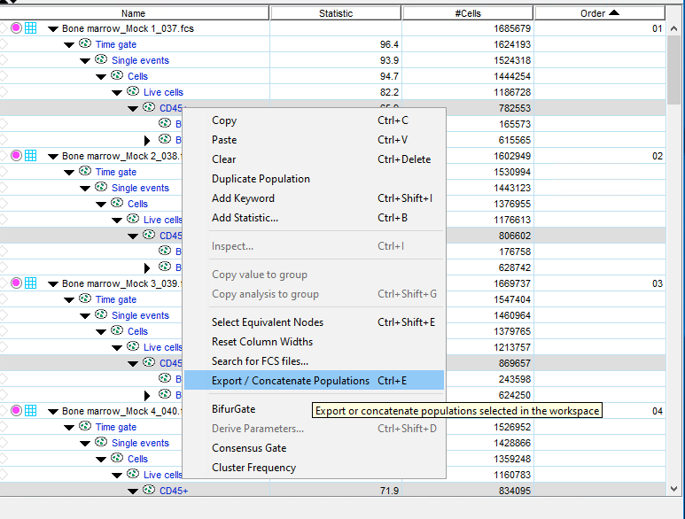
Exporting data as an FCS or CSV file
Spectre can import data as FCS or CSV files.
Choose a format for export:
By default we suggest exporting CSV (scale value) files
You can also export the data as FCS files
If you wish, you can export the ‘channel values’ as a CSV file instead. The channel-values are pre-transformed, which removes the requirement for an arcsinh transformation in R. See this page for more information.
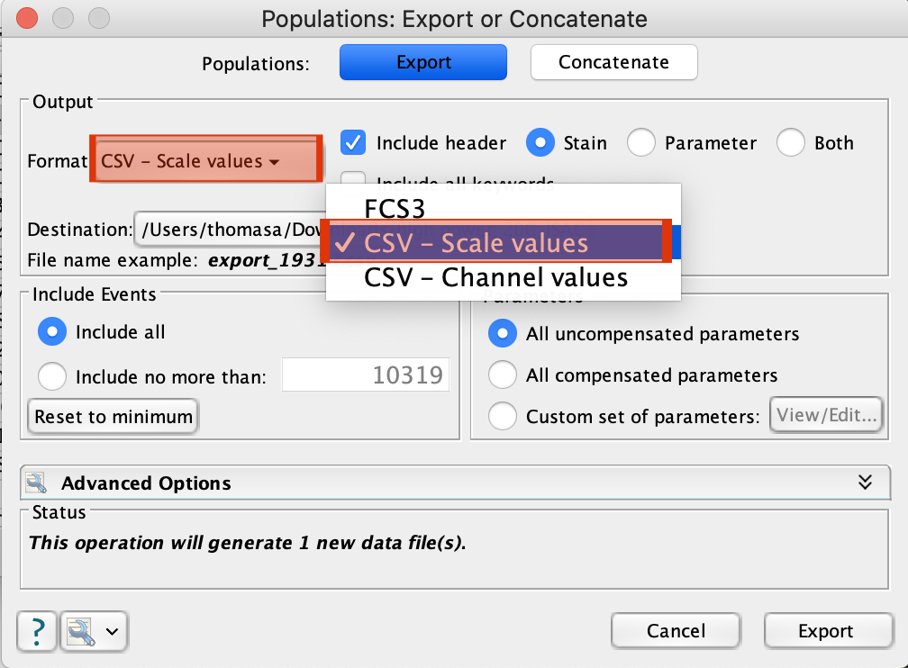
Under ‘Parameters’, select ‘Custom set of parameters’, and select the parameters you wish to export. In this case, select FSC-A and SSC-A, as well as the compensated (Comp-…) parameters.
Make sure to select the compensated (‘Comp-…’) parameters.
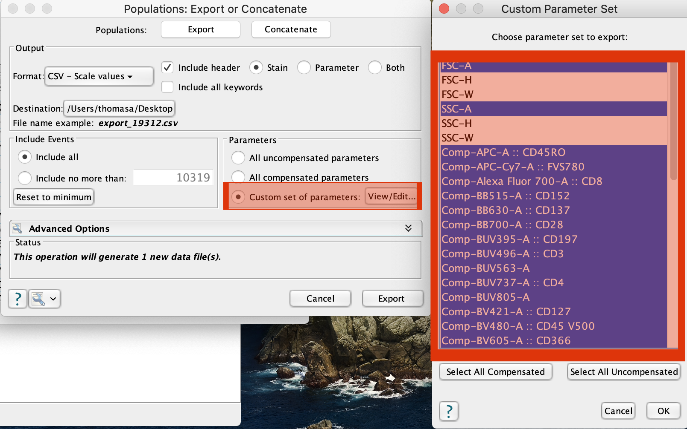
Choose a location for the export.
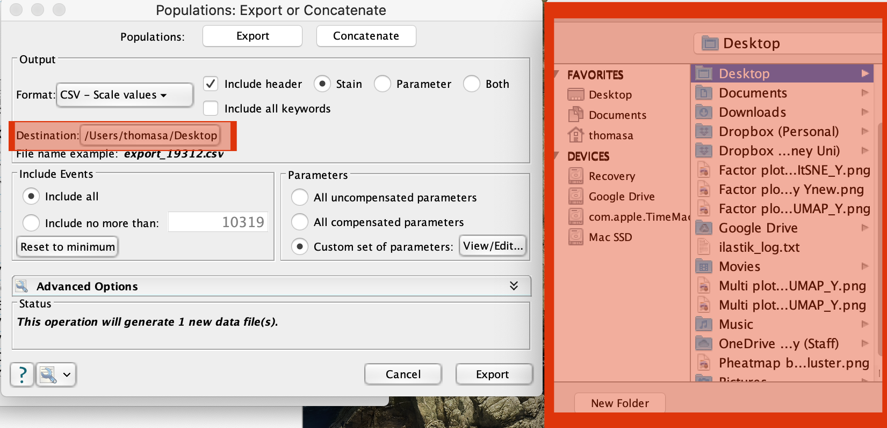
Result:
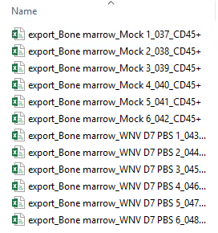
Setup a sample metadata file
To make the analysis a little easier, we usually create a file that contains relevant metadata for each file (e.g. sample name, group name, batch, etc). This allows us to add that sample information to each cell (row) in the data.table in R, making it easy to navigate, filter, and plot the data by any factor (group, batch, etc). If you have cell count for your files, this can be added here as well.
For most of our workflows, within the folder you are using for your analysis there will be:
The R script
A ‘data’ folder, and
A ‘metadata’ folder
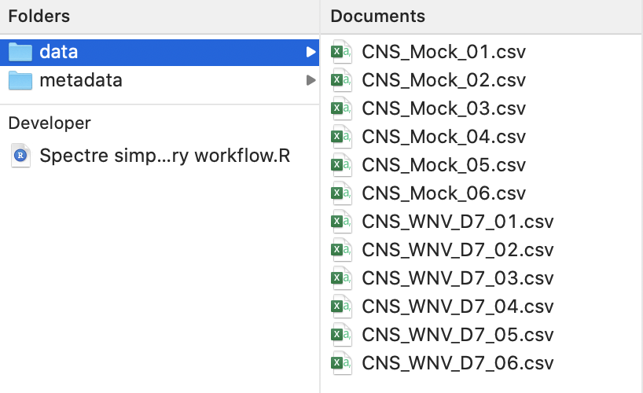
Using Microsoft Excel (or similar), create a new file and save it as a CSV file in the metadata folder
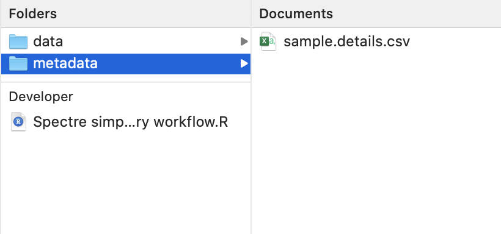
On a Mac, select the files, right click and select ‘copy’ (or press CMD + C).
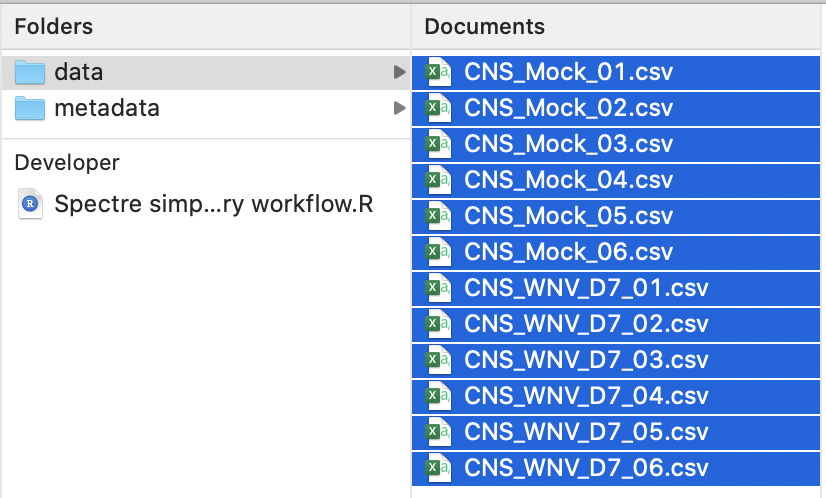
In the ‘sample.details.csv’ file, name the first column ‘Filename’ (A1), then in A2 right click and select ‘paste’ (or press CMD + V). This will paste the filenames into the CSV file.
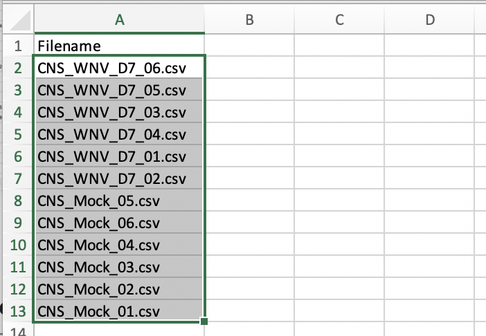
On Windows: select files, press CTRL + A, then paste into excel. Use find and replace to remove the full file path (see this video for a demonstration).
You can then add as much information relevant to each file that you like. Sample, Group, and Batch are ‘required’ for most of the Spectre workflows (they aren’t actually required, but it makes it easier to use the default scripts). If all you samples are from one batch, just enter ‘1’ or ‘A’ (or some other batch name) into each row under ‘batch’. If you would like to add other information (time point, infection, treatment, etc) then feel free to.
“Sample” is a recommended column, as this can be a more simplified name for each sample
“Group” is extremely useful for most analyses
“Batch” is helpful if you have prepared, stained, or run samples in multiple batches. If all you samples are from one batch, just enter ‘1’ or ‘A’ (or some other batch name) into each row under ‘batch’.
“Cells per sample” is a useful column to add if you intend to generate absolute counts of each population per sample during the generation of summary data, but is not required otherwise.
If you would like to add other information (time point, infection, treatment, etc) then feel free to.
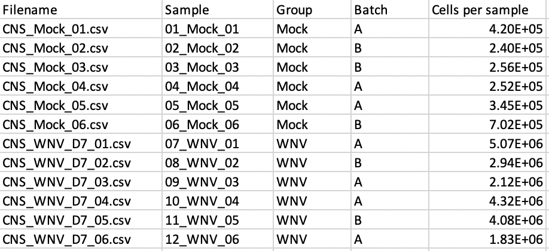
You are now ready to get started with Spectre. Check out our workflows on the Spectre Home page. The Simple Discovery Workflow is a great place to get started.